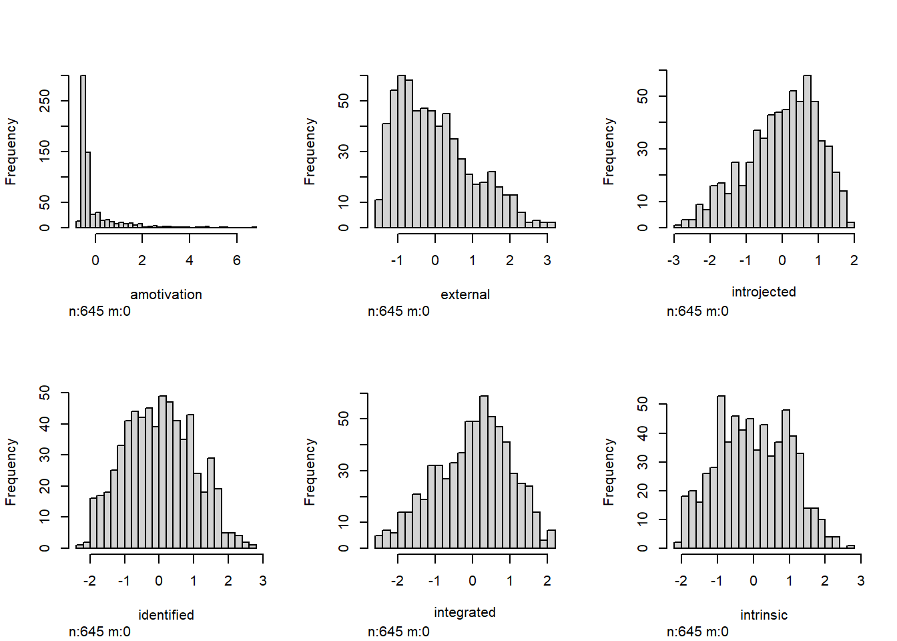
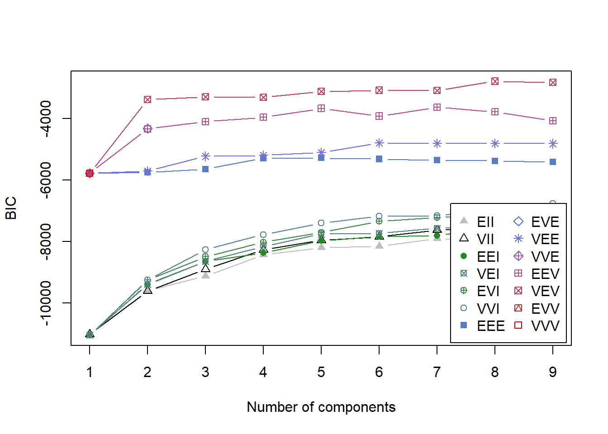
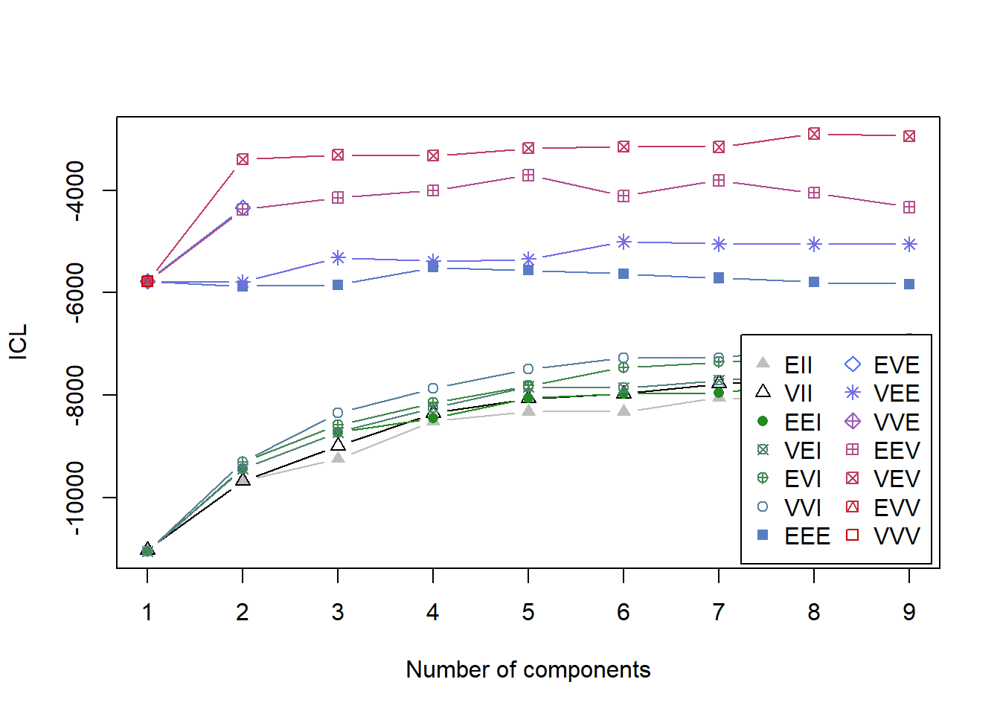

PART 2
Last edited: January 20, 2021
Let’s now estimate the LPA model with as input the CFA factor-scores. Again, the idea is that this would provide subscale estimates that consider the unique contribution of each item (instead of averaging over all items), resulting in “true” motivational configurations (see this article).
We are going to use the Lavaan-package for CFA.
1. Data
Let’s call our ‘cleaned’ SMS-data again.
library(sjlabelled)
library(dplyr)
library(tidyverse)
library(careless)
library(psych)
load("data_abs_public_v2.RData") # load data
data_abs_public <- unlabel(data_abs_public, verbose=F)
sms <- data_abs_public %>% select(W1_M1_1, W1_M1_2, W1_M1_3, W1_M1_4, W1_M1_5, W1_M1_6, W1_M1_7, W1_M1_8, W1_M2_1, W1_M2_2, W1_M2_3, W1_M2_4, W1_M2_5, W1_M2_6, W1_M2_7, W1_M2_8, W1_M3_1, W1_M3_2, W1_M3_3, W1_M3_4, W1_M3_5, W1_M3_6, W1_M3_7, W1_M3_8) # subset W1
sms$id <- 1:length(sms[, 1]) # add identifier
sms <- sms %>%
mutate(string = longstring(.)) %>%
mutate(md = outlier(., plot = FALSE)) # make string variable
cutoff <- (qchisq(p = 1 - .001, df = ncol(sms)))
sms_clean <- sms %>%
filter(string <= 10,
md < cutoff) %>%
select(-string, -md) # cap string responding and use MD
2. CFA
Now we are going to perform confirmatory factor analysis using Lavaan. First, tell Lavaan the confirmatory structure.
library(lavaan)
motivation_model <- "
amotivation =~ W1_M1_5 + W1_M2_4 + W1_M3_1 + W1_M3_6
external =~ W1_M1_4 + W1_M2_3 + W1_M3_3 + W1_M3_8
introjected =~ W1_M1_7 + W1_M2_2 + W1_M2_8 + W1_M3_7
identified =~ W1_M1_3 + W1_M1_8 + W1_M2_7 + W1_M3_4
integrated =~ W1_M1_2 + W1_M2_1 + W1_M2_5 + W1_M3_5
intrinsic =~ W1_M1_1 + W1_M1_6 + W1_M2_6 + W1_M3_2
id ~~ id"
When performing CFA (or any latent variable modeling) the question remains what scale to assign to the latent variable. Many statistical programs (including Lavaan) fix the loading of the first variable for a given latent variable to 1, which assigns the scale of that manifest indicator to the latent variable. We will use a standardized scale for the latent variable (i.e. mean = 0, sd = 1): the loading of the first variable is then freely estimated.
The default treatment of missing data is listwise deletion; perhaps not what we want. Later on we can try full information maximum likelihood (FIML), which will generally result in estimates similar to what you would get with multiple impution, but with the added advantage that it’s all done in one step.
fit <- cfa(motivation_model, data=sms_clean, # use the 'clean' data
std.lv = T # this tells lavaan to use a standardized scale for the latent variables.
)
Let’s call the CFA output with the knitr-package.
library(knitr)
options(knitr.kable.NA = '') # this will hide missing values in the kable table
parameterEstimates(fit, standardized=TRUE) %>%
filter(op == "=~") %>%
mutate(stars = ifelse(pvalue < .001, "***", ifelse(pvalue < .01, "**", ifelse(pvalue < .05, "*", "")))) %>%
select('Latent Factor'=lhs,
Indicator=rhs,
B=est,
SE=se, Z=z,
Beta=std.all,
sig=stars) %>%
kable(digits = 3, format="pandoc", caption="Table 1. Latent Factor Loadings"
)
Table 1. Latent Factor Loadings
| amotivation |
W1_M1_5 |
0.367 |
0.022 |
16.873 |
0.691 |
*** |
| amotivation |
W1_M2_4 |
0.444 |
0.032 |
13.921 |
0.609 |
*** |
| amotivation |
W1_M3_1 |
0.403 |
0.022 |
18.084 |
0.773 |
*** |
| amotivation |
W1_M3_6 |
0.467 |
0.046 |
10.055 |
0.456 |
*** |
| external |
W1_M1_4 |
0.957 |
0.056 |
17.029 |
0.668 |
*** |
| external |
W1_M2_3 |
0.870 |
0.054 |
16.045 |
0.648 |
*** |
| external |
W1_M3_3 |
1.033 |
0.066 |
15.682 |
0.635 |
*** |
| external |
W1_M3_8 |
0.801 |
0.052 |
15.265 |
0.628 |
*** |
| introjected |
W1_M1_7 |
0.905 |
0.057 |
15.795 |
0.612 |
*** |
| introjected |
W1_M2_2 |
1.302 |
0.065 |
19.924 |
0.735 |
*** |
| introjected |
W1_M2_8 |
1.287 |
0.062 |
20.805 |
0.761 |
*** |
| introjected |
W1_M3_7 |
1.196 |
0.067 |
17.823 |
0.678 |
*** |
| identified |
W1_M1_3 |
0.875 |
0.073 |
12.037 |
0.507 |
*** |
| identified |
W1_M1_8 |
1.026 |
0.077 |
13.355 |
0.562 |
*** |
| identified |
W1_M2_7 |
0.719 |
0.064 |
11.229 |
0.459 |
*** |
| identified |
W1_M3_4 |
1.053 |
0.064 |
16.573 |
0.615 |
*** |
| integrated |
W1_M1_2 |
1.012 |
0.057 |
17.709 |
0.660 |
*** |
| integrated |
W1_M2_1 |
1.244 |
0.068 |
18.273 |
0.683 |
*** |
| integrated |
W1_M2_5 |
1.203 |
0.067 |
18.015 |
0.674 |
*** |
| integrated |
W1_M3_5 |
1.398 |
0.064 |
21.776 |
0.779 |
*** |
| intrinsic |
W1_M1_1 |
0.959 |
0.072 |
13.409 |
0.528 |
*** |
| intrinsic |
W1_M1_6 |
1.270 |
0.071 |
17.805 |
0.666 |
*** |
| intrinsic |
W1_M2_6 |
1.413 |
0.065 |
21.669 |
0.779 |
*** |
| intrinsic |
W1_M3_2 |
1.275 |
0.064 |
20.020 |
0.732 |
*** |
So, as an example, for a 1-unit increase in the latent variable amotivation (i.e. 1-SD increase), the model predicts a 0.367 increase in W1_M1_5.
Let’s also get the correlations between the factors.
parameterEstimates(fit, standardized=TRUE) %>%
filter(op == "~~",
lhs %in% c("amotivation", "external", "introjected", "identified", "integrated", "intrinsic"),
!is.na(pvalue)) %>%
mutate(stars = ifelse(pvalue < .001, "***",
ifelse(pvalue < .01, "**",
ifelse(pvalue < .05, "*", "")))) %>%
select('Factor 1'=lhs,
'Factor 2'=rhs,
Correlation=est,
sig=stars) %>%
kable(digits = 3, format="pandoc", caption="Table 2: Latent Factor Correlations")
Table 2: Latent Factor Correlations
| amotivation |
external |
0.192 |
*** |
| amotivation |
introjected |
0.005 |
|
| amotivation |
identified |
0.074 |
|
| amotivation |
integrated |
-0.136 |
** |
| amotivation |
intrinsic |
-0.032 |
|
| external |
introjected |
0.422 |
*** |
| external |
identified |
0.863 |
*** |
| external |
integrated |
0.544 |
*** |
| external |
intrinsic |
0.631 |
*** |
| introjected |
identified |
0.641 |
*** |
| introjected |
integrated |
0.763 |
*** |
| introjected |
intrinsic |
0.459 |
*** |
| identified |
integrated |
0.797 |
*** |
| identified |
intrinsic |
0.963 |
*** |
| integrated |
intrinsic |
0.644 |
*** |
Now extract the factor scores, put them into a dataframe, delete missings, and standardize the factor scores (again). Also, we make a descriptive table.
fs <- lavPredict(fit, newdata = sms_clean, append.data = TRUE) # extract
fs <- as.data.frame(fs[, c(1:6, 31)]) # subset factor scores and identifier in df
clus <- fs %>%
select(-id) %>%
na.omit() %>% # listwise deletion
mutate_all(list(scale)) # standardize
clus$id <- fs$id # add id again...
library(dplyr)
library(tidyr)
library(knitr)
library(kableExtra)
# subset the items we need to describe (and for subsequent LPA)
input <- clus %>%
select(-id) %>%
gather("Variable", "value") %>%
group_by(Variable) %>%
summarise(Mean=mean(value, na.rm=TRUE),
SD=sd(value, na.rm=TRUE),
min=min(value, na.rm=TRUE),
max=max(value, na.rm=TRUE))
knitr::kable(input, digits=2, "html", caption="Table 3. Descriptives of standardized factor scores SMS W1") %>%
kableExtra::kable_styling(bootstrap_options = c("striped", "hover"))
Table 3. Descriptives of standardized factor scores SMS W1
|
Variable
|
Mean
|
SD
|
min
|
max
|
|
amotivation
|
0
|
1
|
-0.71
|
6.61
|
|
external
|
0
|
1
|
-1.56
|
3.01
|
|
identified
|
0
|
1
|
-2.25
|
2.79
|
|
integrated
|
0
|
1
|
-2.49
|
2.15
|
|
intrinsic
|
0
|
1
|
-2.05
|
2.77
|
|
introjected
|
0
|
1
|
-2.83
|
1.83
|
And check the distribution of our variables
library(Hmisc)
hist.data.frame(clus %>%
select(-id))

The produced standardized scores somewhat approximate a Z-score metric (i.e. where values range from ca. -3 to +3). Note that amotivation is an exception to the rule: it is very much right-skewed and has high kurtosis.
3. LPA
Let’s follow the same procedure for LPA, but now we include the standardized factor scores as input.
Model fit
Starting off by exploring model fit again, by plotting it.
BIC
library(mclust)
BIC <- mclustBIC(clus %>%
select(-id)) # exclude id
plot(BIC)

ICL
library(mclust)
ICL <- mclustICL(clus %>%
select(-id))
plot(ICL)

BLRT
mclustBootstrapLRT(clus %>%
select(-id), modelName = "EEV")
And use the summary-function to show the top-three models based on BIC and ICL.
BIC
summary(BIC)
## Best BIC values:
## VEV,9 EEV,8 EEV,9
## BIC -8460.494 -8792.1281 -8871.0369
## BIC diff 0.000 -331.6344 -410.5431
ICL
summary(ICL)
## Best ICL values:
## VEV,9 EEV,8 EEV,9
## ICL -8601.487 -8974.6124 -9081.2694
## ICL diff 0.000 -373.1252 -479.7821
4. Visualizing LPA
Statistically, the best model is the VEV, 9. We do not plot this, but we estimate a sequence of models, incrementally increasing the number of profiles, until they do not provide theoretical additions to the model. Plotting the models will make it easier to, intuitively, assess which model is suitable. We start with 2 profiles.
library(reshape2)
m1 <- Mclust(clus %>%
select(-id), modelNames="VEV", G=2, x=BIC)
summary(m1)
## Length Class Mode
## 0 NULL NULL
LS0tDQp0aXRsZTogIkxhdGVudCBQcm9maWxlIEFuYWx5c2lzIHVzaW5nIE1jbHVzdCINCm91dHB1dDoNCiAgaHRtbF9kb2N1bWVudDoNCiAgICB0b2M6IHRydWUNCiAgICB0b2NfZmxvYXQ6IHRydWUNCiAgICBjb2xsYXBzZWQ6IGZhbHNlDQogICAgbnVtYmVyX3NlY3Rpb25zOiBmYWxzZQ0KICAgIHRvY19kZXB0aDogMQ0KICAgIGNvZGVfZm9sZGluZzogc2hvdw0KICAgIGNvZGVfZG93bmxvYWQ6IHllcw0KLS0tDQoNCmBgYHtyIHNldHVwLCBpbmNsdWRlPUZBTFNFfQ0Ka25pdHI6Om9wdHNfY2h1bmskc2V0KG1lc3NhZ2U9RkFMU0Usd2FybmluZz1GQUxTRSwgY2FjaGU9VFJVRSkNCmBgYA0KDQo8YnI+DQoNCiMjIFBBUlQgMg0KKkxhc3QgZWRpdGVkOiBKYW51YXJ5IDIwLCAyMDIxKg0KDQo8YnI+DQoNCkxldCdzIG5vdyBlc3RpbWF0ZSB0aGUgTFBBIG1vZGVsIHdpdGggYXMgaW5wdXQgdGhlIENGQSBmYWN0b3Itc2NvcmVzLiBBZ2FpbiwgdGhlIGlkZWEgaXMgdGhhdCB0aGlzIHdvdWxkIHByb3ZpZGUgc3Vic2NhbGUgZXN0aW1hdGVzIHRoYXQgY29uc2lkZXIgdGhlIHVuaXF1ZSBjb250cmlidXRpb24gb2YgZWFjaCBpdGVtIChpbnN0ZWFkIG9mIGF2ZXJhZ2luZyBvdmVyIGFsbCBpdGVtcyksIHJlc3VsdGluZyBpbiAidHJ1ZSIgbW90aXZhdGlvbmFsIGNvbmZpZ3VyYXRpb25zIChzZWUgW3RoaXMgYXJ0aWNsZV0oaHR0cHM6Ly9zY2hvbGFyd29ya3MudW1hc3MuZWR1L2NnaS92aWV3Y29udGVudC5jZ2k/YXJ0aWNsZT0xMjI2JmNvbnRleHQ9cGFyZSkpLg0KDQpXZSBhcmUgZ29pbmcgdG8gdXNlIHRoZSBbKkxhdmFhbipdKGh0dHA6Ly93d3cudW5kZXJzdGFuZGluZ2RhdGEubmV0LzIwMTcvMDMvMjIvY2ZhLWluLWxhdmFhbi8pLXBhY2thZ2UgZm9yIENGQS4gDQoNCg0KLS0tDQoNCiMgMS4gRGF0YQ0KDQpMZXQncyBjYWxsIG91ciAnY2xlYW5lZCcgU01TLWRhdGEgYWdhaW4uDQoNCmBgYHtyLCB3YXJuaW5nPUZBTFNFLCBtZXNzYWdlPUZBTFNFfQ0KbGlicmFyeShzamxhYmVsbGVkKQ0KbGlicmFyeShkcGx5cikNCmxpYnJhcnkodGlkeXZlcnNlKQ0KbGlicmFyeShjYXJlbGVzcykNCmxpYnJhcnkocHN5Y2gpDQoNCmxvYWQoImRhdGFfYWJzX3B1YmxpY192Mi5SRGF0YSIpICMgbG9hZCBkYXRhDQpkYXRhX2Fic19wdWJsaWMgPC0gdW5sYWJlbChkYXRhX2Fic19wdWJsaWMsIHZlcmJvc2U9RikNCg0Kc21zIDwtIGRhdGFfYWJzX3B1YmxpYyAlPiUgc2VsZWN0KFcxX00xXzEsIFcxX00xXzIsIFcxX00xXzMsIFcxX00xXzQsIFcxX00xXzUsIFcxX00xXzYsIFcxX00xXzcsIFcxX00xXzgsIFcxX00yXzEsIFcxX00yXzIsIFcxX00yXzMsIFcxX00yXzQsIFcxX00yXzUsIFcxX00yXzYsIFcxX00yXzcsIFcxX00yXzgsIFcxX00zXzEsIFcxX00zXzIsIFcxX00zXzMsIFcxX00zXzQsIFcxX00zXzUsIFcxX00zXzYsIFcxX00zXzcsIFcxX00zXzgpICMgc3Vic2V0IFcxDQoNCnNtcyRpZCA8LSAxOmxlbmd0aChzbXNbLCAxXSkgIyBhZGQgaWRlbnRpZmllcg0KDQpzbXMgPC0gc21zICU+JQ0KICBtdXRhdGUoc3RyaW5nID0gbG9uZ3N0cmluZyguKSkgJT4lDQogIG11dGF0ZShtZCA9IG91dGxpZXIoLiwgcGxvdCA9IEZBTFNFKSkgIyBtYWtlIHN0cmluZyB2YXJpYWJsZQ0KDQpjdXRvZmYgPC0gKHFjaGlzcShwID0gMSAtIC4wMDEsIGRmID0gbmNvbChzbXMpKSkNCnNtc19jbGVhbiA8LSBzbXMgJT4lDQogIGZpbHRlcihzdHJpbmcgPD0gMTAsDQogICAgICAgICBtZCA8IGN1dG9mZikgJT4lDQogIHNlbGVjdCgtc3RyaW5nLCAtbWQpICMgY2FwIHN0cmluZyByZXNwb25kaW5nIGFuZCB1c2UgTUQNCmBgYA0KDQo8YnI+DQoNCi0tLS0NCg0KIyAyLiBDRkENCg0KTm93IHdlIGFyZSBnb2luZyB0byBwZXJmb3JtIGNvbmZpcm1hdG9yeSBmYWN0b3IgYW5hbHlzaXMgdXNpbmcgTGF2YWFuLiBGaXJzdCwgdGVsbCBMYXZhYW4gdGhlIGNvbmZpcm1hdG9yeSBzdHJ1Y3R1cmUuDQoNCmBgYHtyfQ0KbGlicmFyeShsYXZhYW4pDQoNCm1vdGl2YXRpb25fbW9kZWwgPC0gIg0KYW1vdGl2YXRpb24gPX4gVzFfTTFfNSArIFcxX00yXzQgKyBXMV9NM18xICsgVzFfTTNfNg0KZXh0ZXJuYWwgICAgPX4gVzFfTTFfNCArIFcxX00yXzMgKyBXMV9NM18zICsgVzFfTTNfOA0KaW50cm9qZWN0ZWQgPX4gVzFfTTFfNyArIFcxX00yXzIgKyBXMV9NMl84ICsgVzFfTTNfNw0KaWRlbnRpZmllZCAgPX4gVzFfTTFfMyArIFcxX00xXzggKyBXMV9NMl83ICsgVzFfTTNfNA0KaW50ZWdyYXRlZCAgPX4gVzFfTTFfMiArIFcxX00yXzEgKyBXMV9NMl81ICsgVzFfTTNfNQ0KaW50cmluc2ljICAgPX4gVzFfTTFfMSArIFcxX00xXzYgKyBXMV9NMl82ICsgVzFfTTNfMg0KaWQgfn4gaWQiDQpgYGANCg0KV2hlbiBwZXJmb3JtaW5nIENGQSAob3IgYW55IGxhdGVudCB2YXJpYWJsZSBtb2RlbGluZykgdGhlIHF1ZXN0aW9uIHJlbWFpbnMgd2hhdCBzY2FsZSB0byBhc3NpZ24gdG8gdGhlIGxhdGVudCB2YXJpYWJsZS4gTWFueSBzdGF0aXN0aWNhbCBwcm9ncmFtcyAoaW5jbHVkaW5nIExhdmFhbikgZml4IHRoZSBsb2FkaW5nIG9mIHRoZSBmaXJzdCB2YXJpYWJsZSBmb3IgYSBnaXZlbiBsYXRlbnQgdmFyaWFibGUgdG8gMSwgd2hpY2ggYXNzaWducyB0aGUgc2NhbGUgb2YgdGhhdCBtYW5pZmVzdCBpbmRpY2F0b3IgdG8gdGhlIGxhdGVudCB2YXJpYWJsZS4gV2Ugd2lsbCB1c2UgYSBzdGFuZGFyZGl6ZWQgc2NhbGUgZm9yIHRoZSBsYXRlbnQgdmFyaWFibGUgKGkuZS4gbWVhbiA9IDAsIHNkID0gMSk6IHRoZSBsb2FkaW5nIG9mIHRoZSBmaXJzdCB2YXJpYWJsZSBpcyB0aGVuIGZyZWVseSBlc3RpbWF0ZWQuDQoNClRoZSBkZWZhdWx0IHRyZWF0bWVudCBvZiBtaXNzaW5nIGRhdGEgaXMgbGlzdHdpc2UgZGVsZXRpb247IHBlcmhhcHMgbm90IHdoYXQgd2Ugd2FudC4gTGF0ZXIgb24gd2UgY2FuIHRyeSBmdWxsIGluZm9ybWF0aW9uIG1heGltdW0gbGlrZWxpaG9vZCAoRklNTCksIHdoaWNoIHdpbGwgZ2VuZXJhbGx5IHJlc3VsdCBpbiBlc3RpbWF0ZXMgc2ltaWxhciB0byB3aGF0IHlvdSB3b3VsZCBnZXQgd2l0aCBtdWx0aXBsZSBpbXB1dGlvbiwgYnV0IHdpdGggdGhlIGFkZGVkIGFkdmFudGFnZSB0aGF0IGl0J3MgYWxsIGRvbmUgaW4gb25lIHN0ZXAuDQoNCmBgYHtyIGVjaG89VCwgcmVzdWx0cz0naGlkZSd9DQpmaXQgPC0gY2ZhKG1vdGl2YXRpb25fbW9kZWwsIGRhdGE9c21zX2NsZWFuLCAjIHVzZSB0aGUgJ2NsZWFuJyBkYXRhDQogICAgICAgICAgICBzdGQubHYgPSBUICMgdGhpcyB0ZWxscyBsYXZhYW4gdG8gdXNlIGEgc3RhbmRhcmRpemVkIHNjYWxlIGZvciB0aGUgbGF0ZW50IHZhcmlhYmxlcy4NCikNCmBgYA0KDQpMZXQncyBjYWxsIHRoZSBDRkEgb3V0cHV0IHdpdGggdGhlICprbml0ciotcGFja2FnZS4NCg0KYGBge3J9DQpsaWJyYXJ5KGtuaXRyKQ0KDQpvcHRpb25zKGtuaXRyLmthYmxlLk5BID0gJycpICMgdGhpcyB3aWxsIGhpZGUgbWlzc2luZyB2YWx1ZXMgaW4gdGhlIGthYmxlIHRhYmxlDQoNCnBhcmFtZXRlckVzdGltYXRlcyhmaXQsIHN0YW5kYXJkaXplZD1UUlVFKSAlPiUgDQogIGZpbHRlcihvcCA9PSAiPX4iKSAlPiUgDQogIG11dGF0ZShzdGFycyA9IGlmZWxzZShwdmFsdWUgPCAuMDAxLCAiKioqIiwgaWZlbHNlKHB2YWx1ZSA8IC4wMSwgIioqIiwgaWZlbHNlKHB2YWx1ZSA8IC4wNSwgIioiLCAiIikpKSkgJT4lDQogIHNlbGVjdCgnTGF0ZW50IEZhY3Rvcic9bGhzLCANCiAgICAgICAgIEluZGljYXRvcj1yaHMsIA0KICAgICAgICAgQj1lc3QsIA0KICAgICAgICAgU0U9c2UsIFo9eiwgDQogICAgICAgICBCZXRhPXN0ZC5hbGwsIA0KICAgICAgICAgc2lnPXN0YXJzKSAlPiUgDQogIGthYmxlKGRpZ2l0cyA9IDMsIGZvcm1hdD0icGFuZG9jIiwgY2FwdGlvbj0iVGFibGUgMS4gTGF0ZW50IEZhY3RvciBMb2FkaW5ncyINCiAgKQ0KDQpgYGANCg0KDQpTbywgYXMgYW4gZXhhbXBsZSwgZm9yIGEgMS11bml0IGluY3JlYXNlIGluIHRoZSBsYXRlbnQgdmFyaWFibGUgKmFtb3RpdmF0aW9uKiAoaS5lLiAxLVNEIGluY3JlYXNlKSwgdGhlIG1vZGVsIHByZWRpY3RzIGEgMC4zNjcgaW5jcmVhc2UgaW4gVzFfTTFfNS4NCg0KPGJyPg0KDQpMZXQncyBhbHNvIGdldCB0aGUgY29ycmVsYXRpb25zIGJldHdlZW4gdGhlIGZhY3RvcnMuDQoNCmBgYHtyfQ0KcGFyYW1ldGVyRXN0aW1hdGVzKGZpdCwgc3RhbmRhcmRpemVkPVRSVUUpICU+JSANCiAgZmlsdGVyKG9wID09ICJ+fiIsIA0KICAgICAgICAgbGhzICVpbiUgYygiYW1vdGl2YXRpb24iLCAiZXh0ZXJuYWwiLCAiaW50cm9qZWN0ZWQiLCAiaWRlbnRpZmllZCIsICJpbnRlZ3JhdGVkIiwgImludHJpbnNpYyIpLCANCiAgICAgICAgICFpcy5uYShwdmFsdWUpKSAlPiUgDQogIG11dGF0ZShzdGFycyA9IGlmZWxzZShwdmFsdWUgPCAuMDAxLCAiKioqIiwgDQogICAgICAgICAgICAgICAgICAgICAgICBpZmVsc2UocHZhbHVlIDwgLjAxLCAiKioiLCANCiAgICAgICAgICAgICAgICAgICAgICAgICAgICAgICBpZmVsc2UocHZhbHVlIDwgLjA1LCAiKiIsICIiKSkpKSAlPiUgDQogIHNlbGVjdCgnRmFjdG9yIDEnPWxocywgDQogICAgICAgICAnRmFjdG9yIDInPXJocywgDQogICAgICAgICBDb3JyZWxhdGlvbj1lc3QsIA0KICAgICAgICAgc2lnPXN0YXJzKSAlPiUgDQogIGthYmxlKGRpZ2l0cyA9IDMsIGZvcm1hdD0icGFuZG9jIiwgY2FwdGlvbj0iVGFibGUgMjogTGF0ZW50IEZhY3RvciBDb3JyZWxhdGlvbnMiKQ0KYGBgDQoNCjxicj4NCg0KTm93IGV4dHJhY3QgdGhlIGZhY3RvciBzY29yZXMsIHB1dCB0aGVtIGludG8gYSBkYXRhZnJhbWUsIGRlbGV0ZSBtaXNzaW5ncywgYW5kIHN0YW5kYXJkaXplIHRoZSBmYWN0b3Igc2NvcmVzIChhZ2FpbikuIEFsc28sIHdlIG1ha2UgYSBkZXNjcmlwdGl2ZSB0YWJsZS4NCg0KYGBge3J9DQpmcyA8LSBsYXZQcmVkaWN0KGZpdCwgbmV3ZGF0YSA9IHNtc19jbGVhbiwgYXBwZW5kLmRhdGEgPSBUUlVFKSAjIGV4dHJhY3QNCmZzIDwtIGFzLmRhdGEuZnJhbWUoZnNbLCBjKDE6NiwgMzEpXSkgIyBzdWJzZXQgZmFjdG9yIHNjb3JlcyBhbmQgaWRlbnRpZmllciBpbiBkZg0KY2x1cyA8LSBmcyAlPiUNCiAgc2VsZWN0KC1pZCkgJT4lDQogIG5hLm9taXQoKSAlPiUgIyBsaXN0d2lzZSBkZWxldGlvbg0KICBtdXRhdGVfYWxsKGxpc3Qoc2NhbGUpKSAjIHN0YW5kYXJkaXplDQoNCmNsdXMkaWQgPC0gZnMkaWQgIyBhZGQgaWQgYWdhaW4uLi4NCg0KbGlicmFyeShkcGx5cikNCmxpYnJhcnkodGlkeXIpDQpsaWJyYXJ5KGtuaXRyKQ0KbGlicmFyeShrYWJsZUV4dHJhKQ0KDQojIHN1YnNldCB0aGUgaXRlbXMgd2UgbmVlZCB0byBkZXNjcmliZSAoYW5kIGZvciBzdWJzZXF1ZW50IExQQSkNCg0KaW5wdXQgPC0gY2x1cyAlPiUgDQogIHNlbGVjdCgtaWQpICU+JSANCiAgZ2F0aGVyKCJWYXJpYWJsZSIsICJ2YWx1ZSIpICU+JSANCiAgZ3JvdXBfYnkoVmFyaWFibGUpICU+JQ0KICBzdW1tYXJpc2UoTWVhbj1tZWFuKHZhbHVlLCBuYS5ybT1UUlVFKSwgDQogICAgICAgICAgICBTRD1zZCh2YWx1ZSwgbmEucm09VFJVRSksIA0KICAgICAgICAgICAgbWluPW1pbih2YWx1ZSwgbmEucm09VFJVRSksIA0KICAgICAgICAgICAgbWF4PW1heCh2YWx1ZSwgbmEucm09VFJVRSkpDQoNCmtuaXRyOjprYWJsZShpbnB1dCwgZGlnaXRzPTIsICJodG1sIiwgY2FwdGlvbj0iVGFibGUgMy4gRGVzY3JpcHRpdmVzIG9mIHN0YW5kYXJkaXplZCBmYWN0b3Igc2NvcmVzIFNNUyBXMSIpICU+JSANCiAga2FibGVFeHRyYTo6a2FibGVfc3R5bGluZyhib290c3RyYXBfb3B0aW9ucyA9IGMoInN0cmlwZWQiLCAiaG92ZXIiKSkgDQpgYGANCg0KPGJyPg0KDQpBbmQgY2hlY2sgdGhlIGRpc3RyaWJ1dGlvbiBvZiBvdXIgdmFyaWFibGVzDQoNCmBgYHtyfQ0KbGlicmFyeShIbWlzYykNCmhpc3QuZGF0YS5mcmFtZShjbHVzICU+JQ0KICAgICAgICAgICAgICAgICAgc2VsZWN0KC1pZCkpDQpgYGANCg0KVGhlIHByb2R1Y2VkIHN0YW5kYXJkaXplZCBzY29yZXMgc29tZXdoYXQgYXBwcm94aW1hdGUgYSBaLXNjb3JlIG1ldHJpYyAoaS5lLiB3aGVyZSB2YWx1ZXMgcmFuZ2UgZnJvbSBjYS4gLTMgdG8gKzMpLiBOb3RlIHRoYXQgKmFtb3RpdmF0aW9uKiBpcyBhbiBleGNlcHRpb24gdG8gdGhlIHJ1bGU6IGl0IGlzIHZlcnkgbXVjaCByaWdodC1za2V3ZWQgYW5kIGhhcyBoaWdoIGt1cnRvc2lzLg0KDQoNCjxicj4NCg0KLS0tLQ0KDQojIDMuIExQQQ0KDQpMZXQncyBmb2xsb3cgdGhlIHNhbWUgcHJvY2VkdXJlIGZvciBMUEEsIGJ1dCBub3cgd2UgaW5jbHVkZSB0aGUgc3RhbmRhcmRpemVkIGZhY3RvciBzY29yZXMgYXMgaW5wdXQuDQoNCiMjIE1vZGVsIGZpdCB7LnRhYnNldCAudGFic2V0LWZhZGV9IA0KDQpTdGFydGluZyBvZmYgYnkgZXhwbG9yaW5nIG1vZGVsIGZpdCBhZ2FpbiwgYnkgcGxvdHRpbmcgaXQuDQoNCiMjIyBCSUMNCmBgYHtyIGNsYXNzLnNvdXJjZSA9ICdmb2xkLWhpZGUnfQ0KbGlicmFyeShtY2x1c3QpDQpCSUMgPC0gbWNsdXN0QklDKGNsdXMgJT4lDQogICAgICAgICAgICAgICAgICAgc2VsZWN0KC1pZCkpICMgZXhjbHVkZSBpZA0KcGxvdChCSUMpDQpgYGANCg0KIyMjIElDTA0KYGBge3IgY2xhc3Muc291cmNlID0gJ2ZvbGQtaGlkZSd9DQpsaWJyYXJ5KG1jbHVzdCkNCklDTCA8LSBtY2x1c3RJQ0woY2x1cyAlPiUNCiAgICAgICAgICAgICAgIHNlbGVjdCgtaWQpKQ0KcGxvdChJQ0wpDQpgYGANCg0KIyMjIEJMUlQNCmBgYHtyIGV2YWwgPSBGQUxTRX0NCm1jbHVzdEJvb3RzdHJhcExSVChjbHVzICU+JQ0KICAgICAgICAgICAgICAgc2VsZWN0KC1pZCksIG1vZGVsTmFtZSA9ICJFRVYiKQ0KYGBgDQoNCiMjIHstfQ0KDQpBbmQgdXNlIHRoZSAqc3VtbWFyeSotZnVuY3Rpb24gdG8gc2hvdyB0aGUgdG9wLXRocmVlIG1vZGVscyBiYXNlZCBvbiBCSUMgYW5kIElDTC4NCg0KIyMgey50YWJzZXQgLnRhYnNldC1mYWRlfQ0KDQojIyMgQklDDQpgYGB7ciBjbGFzcy5zb3VyY2UgPSAnZm9sZC1oaWRlJ30NCnN1bW1hcnkoQklDKQ0KYGBgDQoNCiMjIyBJQ0wNCmBgYHtyIGNsYXNzLnNvdXJjZSA9ICdmb2xkLWhpZGUnfQ0Kc3VtbWFyeShJQ0wpDQpgYGANCg0KIyMgey19DQoNCjxicj4NCg0KLS0tLQ0KDQojIDQuIFZpc3VhbGl6aW5nIExQQSB7LnRhYnNldCAudGFic2V0LWZhZGV9IA0KDQpTdGF0aXN0aWNhbGx5LCB0aGUgYmVzdCBtb2RlbCBpcyB0aGUgVkVWLCA5LiBXZSBkbyBub3QgcGxvdCB0aGlzLCBidXQgd2UgZXN0aW1hdGUgYSBzZXF1ZW5jZSBvZiBtb2RlbHMsIGluY3JlbWVudGFsbHkgaW5jcmVhc2luZyB0aGUgbnVtYmVyIG9mIHByb2ZpbGVzLCB1bnRpbCB0aGV5IGRvIG5vdCBwcm92aWRlIHRoZW9yZXRpY2FsIGFkZGl0aW9ucyB0byB0aGUgbW9kZWwuIFBsb3R0aW5nIHRoZSBtb2RlbHMgd2lsbCBtYWtlIGl0IGVhc2llciB0bywgaW50dWl0aXZlbHksIGFzc2VzcyB3aGljaCBtb2RlbCBpcyBzdWl0YWJsZS4gV2Ugc3RhcnQgd2l0aCAyIHByb2ZpbGVzLiANCg0KYGBge3J9DQpsaWJyYXJ5KHJlc2hhcGUyKQ0KDQptMSA8LSBNY2x1c3QoY2x1cyAlPiUNCiAgICAgICAgICAgICAgIHNlbGVjdCgtaWQpLCBtb2RlbE5hbWVzPSJWRVYiLCBHPTIsIHg9QklDKQ0KDQpzdW1tYXJ5KG0xKQ0KYGBg